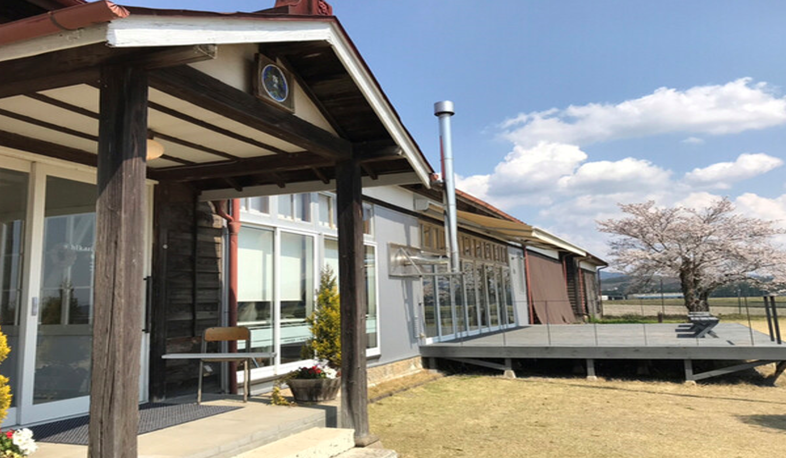
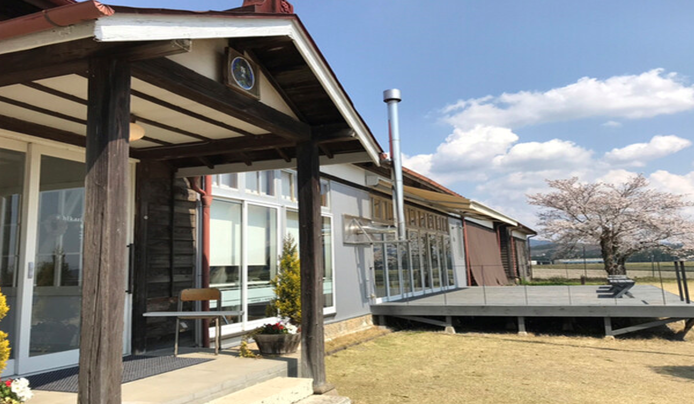

廃校前の小学校
手前の教室から１・２・３年教室で細い通路を挟んで小さい銀色の壁の小屋は図書室でした。
更に校長室・職員室・放送室でこれらがあった場所が現在のカフェとなっています。次に現在は立ち入り禁止ですが
４・５年教室で少し離れた一番奥の教室が６年教室でした。そのため６年教室は特別感があり、下級生にとって少し憧れの場所でした。
校庭にある大きな銀杏の木は元々築山の上にありました。体育館、家庭科室、音楽室、プールなどは校舎の後ろ側にありました。
全校生徒数は昔からあまり多くなかったため一人一台専用に一輪車があり、小学校に通っていた学生は全員一輪車に載ることができ、
運動会では生徒全員だけでなくOB・OGによる一輪車パフォーマンスもありました。
私は１～３年生まで通っていましたが、廃校前の最後の年の全校生徒は
一年生5人、二年生9人、三年生12人、四年生10人、五年生9人、六年生9人の計54人の小さな学校でした。
教室の写真の展示ですがページ作成者の父と叔母の写真が展示されていました。
３年教室には私を含め、廃校当時３年生だった１２人の名前が壁や柱に書いてあります。
思い出の詰まった母校を廃校後もほとんど変わらない状態で残し、校内を開放していただいたことにとても感謝しています。

 
